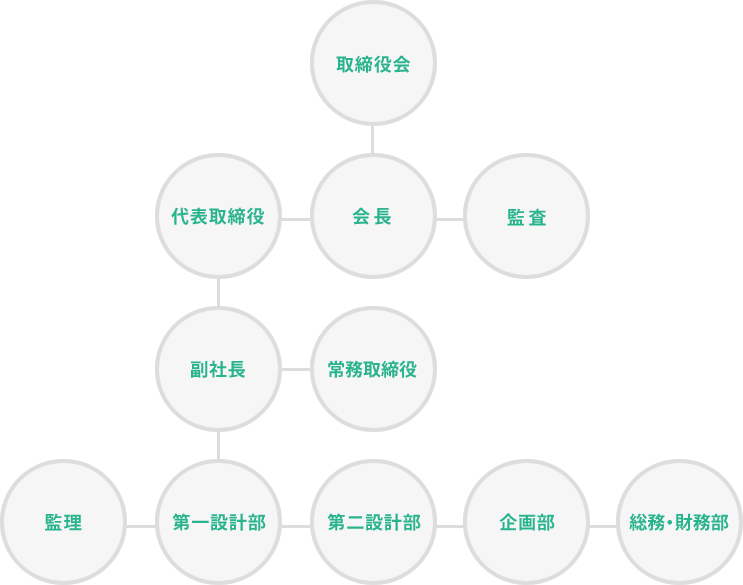

회사 소개
ABOUT US
인사말
모든 건축 설계는 건축물의 존재 자체가 사람과 사회에 직접 미치는 영향이 크다는 무거운 책임을 자각해야 한다고 생각합니다. 단지 건축물의 물리적 안전을 확보하고 법규를 준수하는 데 그치지 않고, 스스로 공공의 복지에 공헌하며 더 나은 환경 공간을 만드는 데 기여하는 문화적 사명을 지닌 일이라 여깁니다. 또한 건축이 지닌 목적성과 사회성을 기술적·예술적으로 통합할 때 비로소 좋은 건축이 탄생합니다. 이런 의미에서 모든 건축 설계는 기본적으로 건축주와 설계자의 공동 작업이며, 저희는 건축주가 그리는 건축의 전체 이미지를 소중히 여기며 더 좋은 건축을 함께 만들어 가고자 합니다.
회사 개요
| 회사명 | 주식회사 마사키 건축설계사무소（株式会社 雅禧建築設計事務所） |
|---|---|
| 대표자 | 대표이사 早田 倫明 |
| 본사 | 후쿠오카시 주오구 다이묘 2-4-22 신니혼빌딩 4층（福岡市中央区大名2丁目4番22号新日本ビル4階） |
| 창업 | 1976년 1월 27일 |
| 설립 | 1978년 9월 27일 |
| 자본금 | 1,000만 엔 |
| 등록번호 | 후쿠오카현 지사 등록 제1-11037호 |
| 직원 수 | 16명 |
| 거래 은행 | 니시닛폰시티은행 아카사카몬 지점 · 후쿠오카은행 아카사카몬 지점 |
소속 단체·자격
소속 단체
- 후쿠오카현 건축사사무소협회（福岡県建築士事務所協会）
- 후쿠오카현 건축사회（福岡県建築士会）
- 후쿠오카 설계협동조합（福岡設計共同組合）
- 사단법인 규슈주택건설산업협회（九州住宅建設産業協会）
- 일반사단법인 일본컨스트럭션매니지먼트협회（日本コンストラクション・マネジメント協会）
자격 보유자
- 1급 건축사4명
- 2급 건축사2명
- 건축 적산 자격자1명
연혁
- 19761976년 1월후쿠오카시 주오구 다카사고 2초메에서 마사키 건축설계사무소 개설
- 19771977년 1월후쿠오카시 주오구 다카사고에서 주오구 아카사카로 이전
- 19781978년 1월주식회사 마사키 건축설계사무소 설립
- 19881988년 1월도쿄도 시나가와구 오사키 5초메에 도쿄 사무소 개설
- 19911991년 6월도쿄 사무소를 시나가와구 오사키에서 미나토구 롯폰기 7초메로 이전
- 19951995년 10월도쿄 사무소를 미나토구 롯폰기에서 시부야구 에비스니시 2초메로 이전
- 19971997년 10월도쿄 사무소를 후쿠오카 본사로 통합
- 20242024년 11월후쿠오카시 주오구 아카사카에서 주오구 다이묘로 이전
조직도
